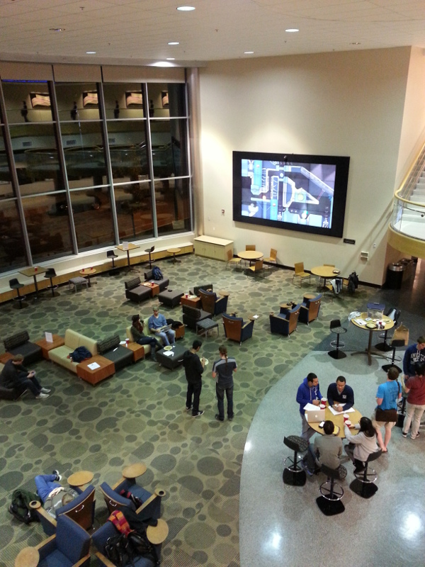

Blobbing at Qualcomm Game Night
Ben -
Last night, Qualcomm and Purdue ACM hosted a game night in the Lawson commons. James and I jumped on the opportunity to test out Blob Game on the 184" video wall.
For some reason, there are no longer any inputs near the wall itself. We had to set up on the balcony and use James' probably-not-to-spec 25 foot HDMI cable to connect my laptop to the server room. Other than that, everything worked great!